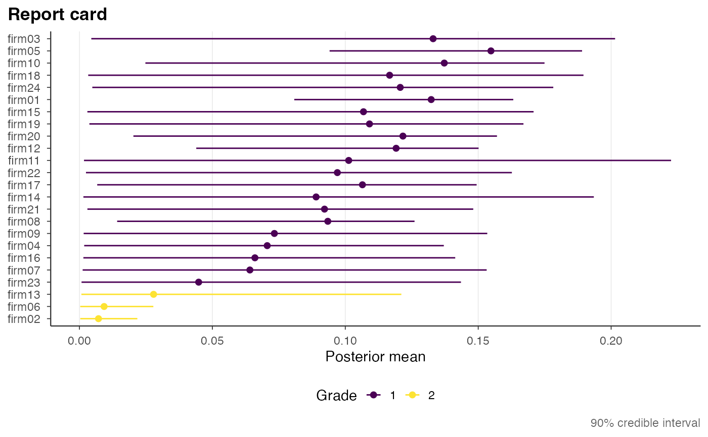
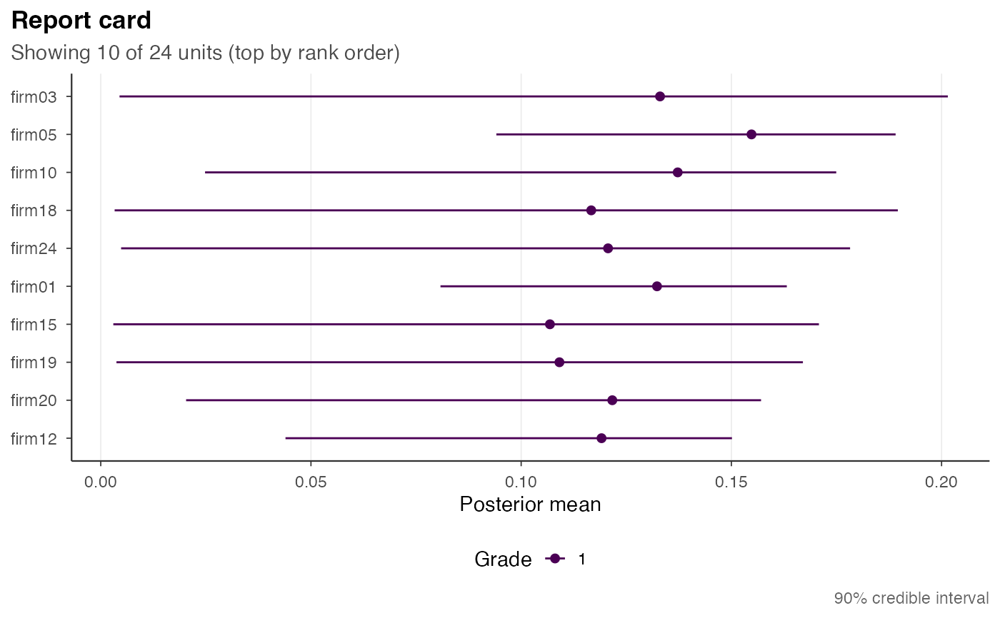

Plot the KRW report card (horizontal point-and-interval)
Source:R/plots-report-card.R
gp_plot_report_card.Rdgp_plot_report_card() draws the Kline-Rose-Walters unit-level report card
(their Figures 7, 8, 14, 15) as a horizontal point-and-interval
("caterpillar") plot: each unit's posterior mean (point) with its stored
credible interval (lower, upper), one unit per row, ordered so the
most-extreme unit is on top, and coloured by the unit's selected grade using
the shared ordinal palette (scale_color_gradepath()). The interval already
on the card is displayed as-is and never recomputed. The figure is neutral: it
carries no welfare-verdict text, because grade 1's welfare meaning flips
between firms and names. Pass it a gp_report_card() (or the gp_fit that
carries one).
Usage
gp_plot_report_card(
x,
order = "rank",
ci_level = NULL,
max_rows = NULL,
zero_line = "auto",
...
)Arguments
- x
A
gp_report_card(primary). Agp_fitis also accepted, in which case its$report_cardis used.- order
Row order, most-extreme unit on top.
"rank"(default) uses the endpoint/Condorcetsort_rank(the canonical endpoint-sorted figure);"mean"orders byposterior_mean;"grade"groups by grade thensort_rank;"label"is alphabetical.- ci_level
Optional number in
(0, 1)used ONLY to label the caption, e.g.0.9-> "90% credible interval".NULL(default) reads the level fromx$control$interval_level(default0.90); the interval itself is never recomputed.- max_rows
Optional positive integer keeping only the top
max_rowsunits by the chosen order, with a "Showing N of M" subtitle (never silent).NULL(default) shows all units.- zero_line
Dashed reference line at
x = 0:"auto"(default) draws it only when the intervals straddle zero (min(lower) < 0 < max(upper));"on"always;"off"never.- ...
Reserved for future arguments; currently unused.
Examples
fit <- readRDS(system.file("extdata/examples/tiny_fit.rds", package = "gradepath"))
card <- get_report_card(fit)
gp_plot_report_card(card) # endpoint-sorted, coloured by grade
 gp_plot_report_card(card, order = "grade") # grouped by grade
gp_plot_report_card(card, order = "grade") # grouped by grade

gp_plot_report_card(card, max_rows = 10) # top 10 only

gp_plot_report_card(fit) # convenience: a gp_fit